I implemented a first generation digital camera system using an STM32 microcontroller platform. I achieved the goal of the project, which is to interface an image sensor, capture raw image frames, process data, and display the output on a 3.2 inch TFT display screen, fully controlled using Embedded C. This project demonstrates embedded image acquisition, real time data handling, memory constrained processing, and hardware level display control.
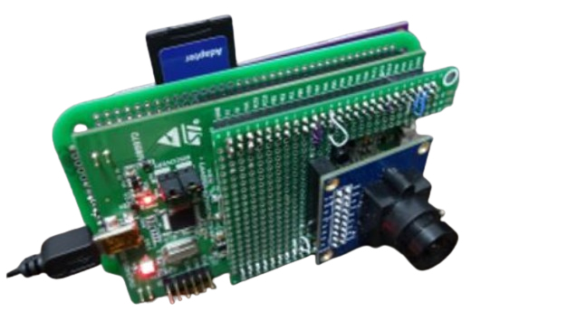
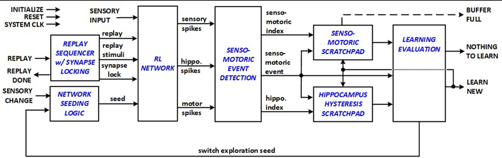
I conduction a master's thesis research under the supervision of Professor Ali during my Master's studies at Oslo Metropolitan University. The goal was to implement a novel bio-inspired Reinforcement Learning system architecture, leading to lower significant energy consumption benefits without foregoing real-time autonomous processing and accuracy requirements of the context-dependent task. This goal was acheived after the completion of the thesis.
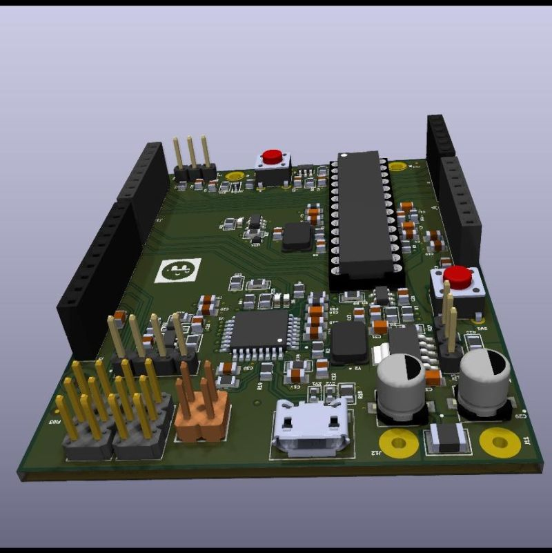
In this project, I designed a custom Arduino Uno PCB and performed the complete firmware bring‑up process for both ATmega328P microcontroller and ATmega16U2 USB-to-serial communication on the board. The work covered schematic design, PCB layout, component selection, firmware flashing, and final functional testing.
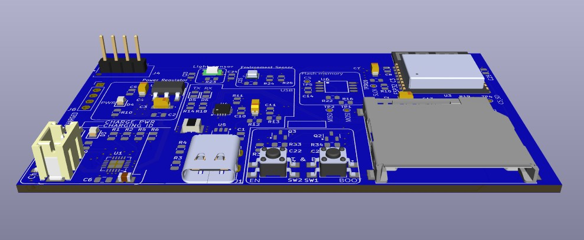
In this project, I designed and assembled a custom 4‑layer IoT development board
built around the ESP32‑C3 microcontroller. The board integrates multiple sensors,
precision analog circuitry, flexible storage options, and robust power management,
making it suitable for real‑time classification and edge decision‑making without
relying on cloud services.
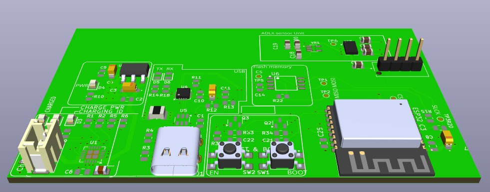
Building on the original ESP32-based 4-layer IoT development board, I integrated the ADXL335 analog accelerometer. This modification transforms the board into a compact, low-power fall detection platform capable of real-time motion analysis and threshold-based event detection. The goal of this design was to create a dedicated edge-processing device that can detect sudden acceleration changes associated with falls, making it suitable for safety devices and industrial worker protection.
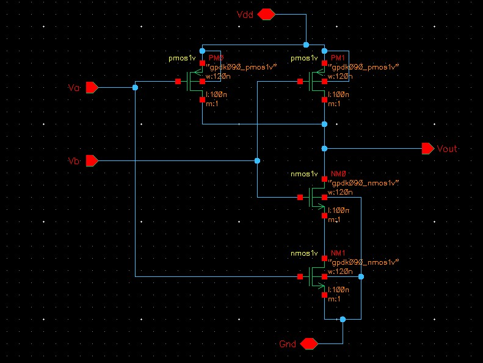
This project demonstrates the complete design flow of a CMOS NAND gate using Cadence Virtuoso. The work includes transistor‑level schematic design, testbench creation, physical layout implementation, DRC/LVS verification, and transient simulation using Spectre. The goal was to implement a fully functional NAND gate and validate its behavior through waveform analysis.

This project demonstrates the design and verification of a CMOS inverter using Cadence Virtuoso. The work includes transistor‑level schematic creation, a transient‑analysis testbench, and waveform verification using Spectre. The inverter is the fundamental building block of all CMOS digital logic.
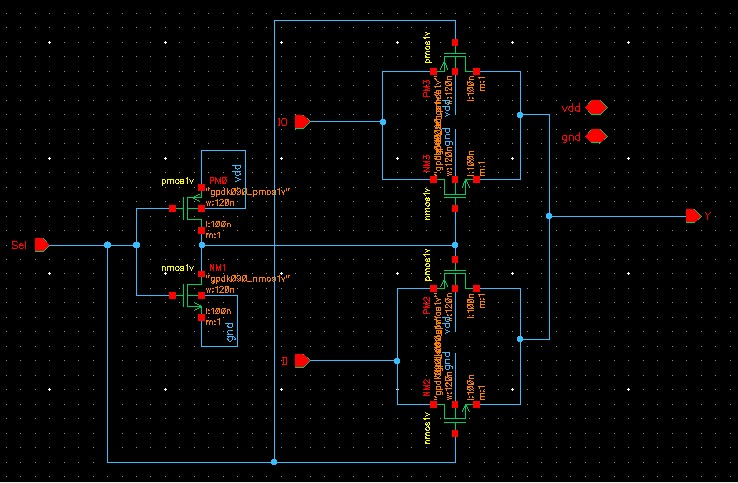
This project showcases the complete design flow of a 2-to-1 CMOS multiplexer using Cadence Virtuoso.
The work includes transistor-level schematic implementation, creation of a reusable symbol view, and a functional
testbench used to verify correct digital switching behavior. The 2:1 MUX is a fundamental building block in digital
systems, enabling signal selection and routing in datapaths and control logic.
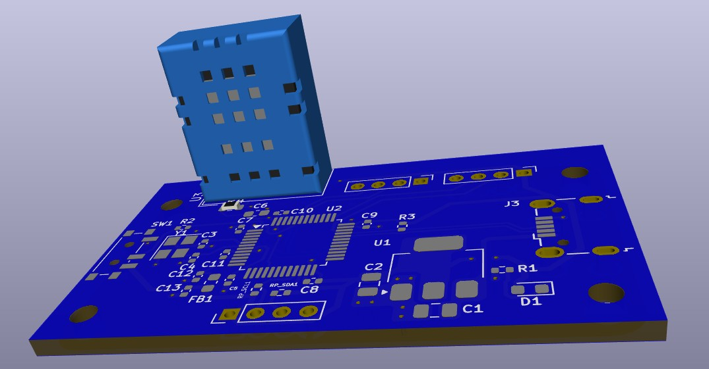
This project uses the STM32F103C8T6 Blue Pill microcontroller to interface with the DHT11 temperature and humidity sensor. The goal was to build a simple, low‑cost, real‑time environmental monitoring system using STM32 bare‑metal programming and digital sensor communication. The system reads temperature and humidity values from the DHT11 sensor, processes the data on the STM32, and outputs the results through serial communication for logging or visualization.
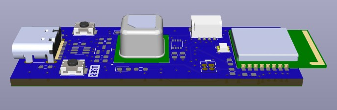
I implemented a Home Assistant compatible CO₂, temperature, and humidity monitor.
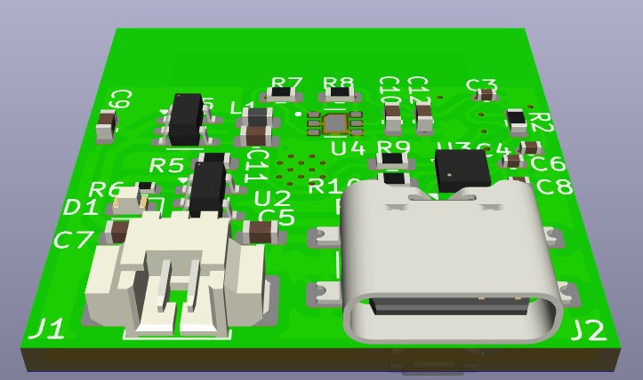
I implemented a compact environmental monitoring system to measure multiple atmospheric parameters with high accuracy. It integrates BME280 for temperature, humidity, and pressure, and Sensirion SPG40 for air quality and CO₂‑equivalent estimation.
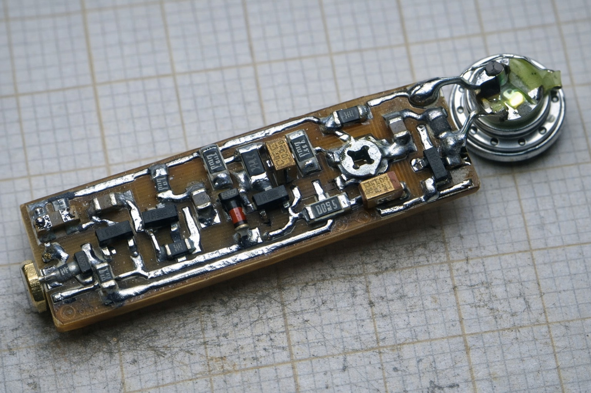
I implemented a compact transistor-based hearing aid using
amplification stages. The system utilizes bipolar transistors, a high-impedance earphone, and an electret microphone to achieve
high sensitivity, effective loud-signal suppression, and low power consumption from a single-cell battery.
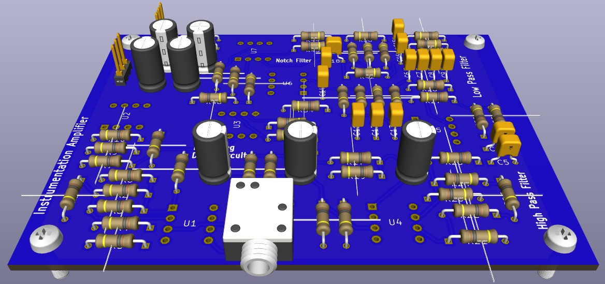
I implemented an analog ECG heart‑rate monitorsystem that captures, amplifies, filters, and displays real‑time ECG waveforms using fully analog circuitry combined with a microcontroller‑based interface.
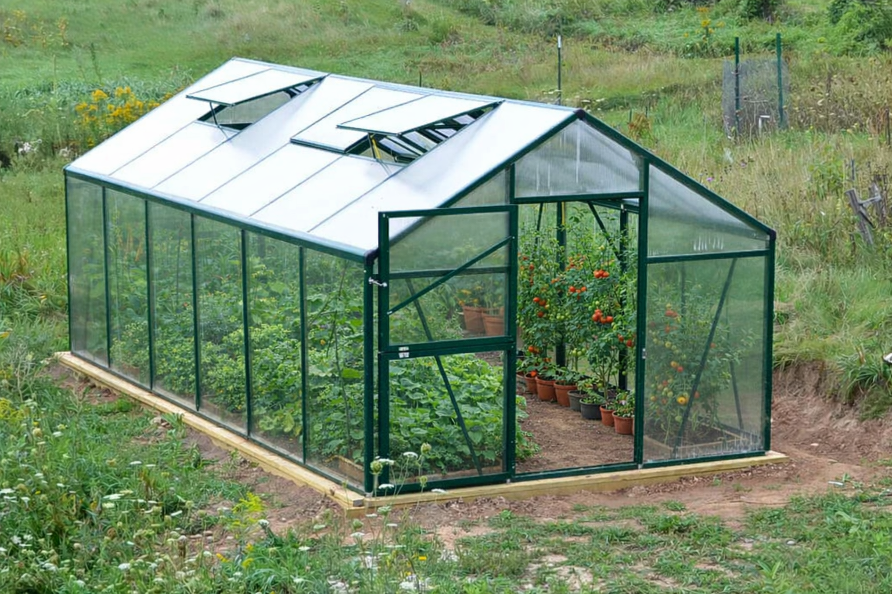
I implemented an IoT-based smart greenhouse using ESP32-based sensors that autonomously monitors and controls environmental conditions in a agricultural farm, reducing manual plant care and enabling remote monitoring via a cloud dashboard.
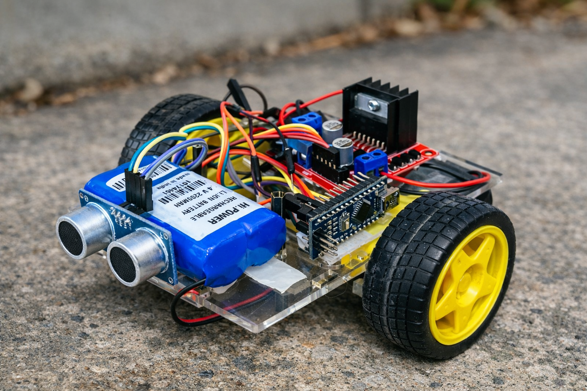
This project is a compact autonomous robotic vehicle built using an Arduino, L298N motor driver, ultrasonic sensor, IR line sensors, and a servo‑mounted distance scanner. The robot can follow a line, detect obstacles, and make navigation decisions in real time.
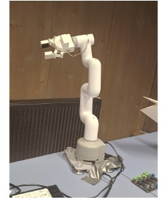
In this project, I demostrated the integration of a 6-degree-of-freedom MYCobot robotic arm and showcased its advanced intelligent route planning capabilities.
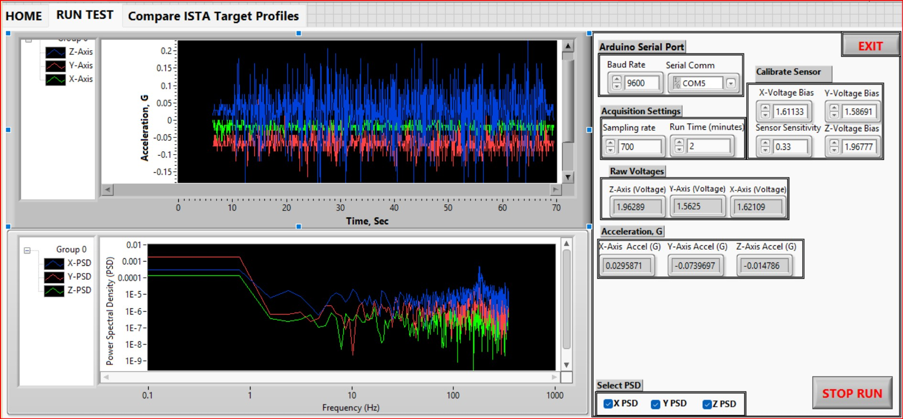
In this project, I implemented a complete vibration measurement and spectral analysis system using an Arduino Uno interfaced with the ADXL335 analog accelerometer. The system acquires tri-axial acceleration data, converts raw voltages into calibrated acceleration values, and performs real-time Power Spectral Density (PSD) analysis in LabVIEW. The platform is designed for vibration diagnostics, structural monitoring, and general motion analysis.